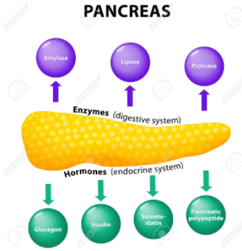

1Esteatosis hepática no alcohólica
Acumulación de ácidos grasos libres y triglicéridos en el citoplasma de los hepatocitos. Asociada comúnmente con la insulinorresistencia, obesidad y diabetes tipo 2, donde en un primer impacto, el excedente de glucosa y ácidos grasos (debido al tejido adiposo hipertrofiado), es dirigida al hígado, aumentando los triglicéridos. El segundo impacto ocurre por la acumulación de lípidos que llegan a ser tóxicos, causando una respuesta de estrés oxidativo en el hígado, que lleva a apoptosis, disminución de la beta oxidación y desencadenando así, un proceso inflamatorio crónico. Todo este último proceso, llevará a la esteatohepatitis (forma agresiva de la enfermedad) y posteriormente, a fibrosis, predisponiendo la aparición de otras patologías como cirrosis o hepatocarcinoma.

2 Sintomas y Factores de Riesgo
Los síntomas que acompañan la esteatohepatitis y la esteatosis hepática no alcohólica. Generalmente los pacientes con estos padecimientos no presentan síntomas hasta después de que la enfermedad ha progresado. Algunos de estos síntomas son: Fatiga, Náuseas, Ictericia y dolor en el cuadrante superior derecho, Además es característica la presencia de hepatomegalia aunque no siempre es palpable y es secundaria a la obesidad.
Factores de riesgo asociados a la Esteatosis hepática no alcohólica se relacionan en personas con: Colesterol alto, Triglicéridos en sangre elevados, Síndrome metabólico, Obesidad abdominal, Síndrome de ovario poliquístico, Diabetes tipo 2, Hipotiroidismo.
3Diagnostico
Los médicos se basan en la historia clínica, el examen físico y las pruebas del paciente para diagnosticar la enfermedad de hígado graso no alcohólica. Estas son algunas de las pruebas utilizadas para diagnosticar EHNA:
Tratamiento
No existen medicamentos específicos para tratar esta enfermedad. Lo mejor sería llevar una vida saludable evitando los factores de riesgo, con una dieta saludable y realizar ejercicio, es decir, el paciente debe llevar un cuidado personal.
PANCREAS EXOCRINO Y DIGESTIÓN
El páncreas es una glándula que mide alrededor de seis pulgadas de largo y se ubica en el abdomen. Está rodeada por el estómago, el intestino delgado, el hígado, el bazo, y la vesícula biliar. Tiene la forma de una pera plana. El extremo ancho del páncreas se llama cabeza, las secciones medias son el cuello y el cuerpo y el extremo delgado es la cola. El proceso unciforme es la parte de la glándula que se dobla hacia atrás y por debajo de la cabeza del páncreas. La cola se encuentra en el lado izquierdo del cuerpo, mientras que la cabeza y el proceso unciforme se encuentran en el derecho. Dos vasos sanguíneos muy importantes, la arteria mesentérica superior y la vena mesentérica superior, cruzan por detrás del cuello del páncreas y enfrente del proceso unciforme.
PANCREAS ENDOCRINO |
PÁNCREAS EXOCRINO |
|---|---|
| Células de Langerhans |
Células Acinares: Células Acinares granulosas: secretan enzimas. Células exteriores del ducto: Secretan Bicarbonato. |
| Estas células NO tienen conexión con ductos, y sus productos son liberados directamente en el torrente sanguíneo | Las células Acinares conectan con ductos, los cuales desembocan al Duodeno, y a su vez tiene conexión con la Bilis (facilitando el proceso digestivo, al vincularse con los jugos pancreáticos) |
| De su función se obtiene la Insulina y el Glucagón | En esta función se obtiene la producción de Enzimas pancreáticas y producción de Bicarbonato |
Mapa jugos pancreáticos y secreción pancreática

Patologias
Se define como pancreatitis a la inflamación del pancreas la cual puede ser aguda o crónica dependiendo el nivel de daño que se esté presentando a nivel de este organo.
Su diferencia se da ya que la pancreatitis aguda si es reversible pero la crónica no ya que hay proceso de fibrosis.
PANCREATITIS AGUDA
Esta es inflamación del pancreas poco asociada a fibrosis la cual es debido a la activacion de las enzimas digestivas dentro de este órgano.
sus causas son: Calculos biliares, alcohol, hipertrigliceridemia, trauma, infecciones y en algunos casos es hereditaria. tambien se puede asociar a complicaciones adicionales como insuficiencia respiratoria, renal y shock lo cual da a entender un alto indice de morbilidad y mortalidad.
Manifestaciones clinicas: -Dolor abdominal cercano a la espalda, fiebre, nausea, vomito, anorexia, taquicarida, hematomas a nivel abdominal.
Fisiopatología
Se inicia con la obstrucción a nivel de conductos directos al duodeno lo cual da paso a que se activen estas enzimas directamente al torrente sanguíneo aumentando su concentración y así permitiendo que estas enzimas hagan daño a nivel estructural del cuerpo humano (daño a vasos sanguineos, tejidos, necrosis de tejido adiposo, etc) y una autodigestion del pancreas por la activacion intrapancreatica generando injuria de los acinos pancreaticos que repite el ciclo de liberacion de las enzimas.
Al haber un daño a nivel acinar pancreatico, la tripsina es activada y desencadena una serie complicaciones al activar la Kalikreina formando Edema e inflamación, Quimiotripsinogeno formando edema y daño vascular, Elastasa la cual permite el daño vascular y hemorragia, Fosfolipasa A2 causa coagulacion y necrosis junto a la degradacion del sulfractante pulmonar dando lugar a una insuficiencia respiratorio, Lipasa necrosis tejido adiposo con hipocalcemia al secuestrar el calcio. (se complementa mirando a la grafica).
-PANCREATITIS CRONICA
Daño progresivo e irreversible de la glandula que afecta las funciones endocrinas y exocrinas.
A nivel histopatológico se encuestran estas manifestaciones: fibrosis, atrofia de acino pancreatico, inflamación crónica, distorision de conductos pancreaticos con zonas de estenosis, calcificaciones o infiltrado linfoplasmocitario extenso.
sus causas son:
en el 70-90% de los casos se debe a la presencia de componentes toxicos o metablicos, como el alcohol,cigarrillo, insuficiencia renal o hipercalcemia lo cual da paso a estres oxidativo, metabolitos toxicos, fibrosis o necrosis y obstrucción de los ductos biliares.
el 10 - 30% restante es casuado de forma genética, enfermedad autoinmune, obstrucion, causas idiopáticas y el resultado de varias pancreatitis agudas.
Manifestaciones clinicas:
-Dolor: Epigastrico e irradiado al dorso que con el tiempo disminuye, -Mala Digestion: en enfermedad avanzada hay esteatorrea y perdida de peso conla disminucion del 10% aproximado de lipasa, -Diabetes: Se clasifica como tipo IIIC segun la ADA ya que hay destrucción de células alfa y beta pancreaticas.
Fisiopatología:
a celulas estrelladas al final de lo acinos pancreaticos, acumulan grasa a nivel del citoplasma el cual es in componente inflamatorio entonces si se produce alguna alteracion a nivel acinar las celulas estrelladas se activaran de una forma autocrina dando paso a dos posibles escenarios, apoptosis para reparacion o en el peor de los casos la activacion persistente que dará paso a la fibrosis que se extenderá por todo el tejido.
-DIAGNÓSTICO PANCREATITIS AGUDA Y CRONICA Y TRATAMIENTO
Se tiene que observar a nivel de manifestaciones clinicas e historial del paciente para poder ayudar en el diagnostico junto a estas técnicas:
Imagenes Invasivas o no invasivas,
Cuantificacion directa de la secreción pancreatica tras la estimulación,
Funcion enzimatica por medio del suero o heces,
Evaluación indirecta de la funcion pancreatica: capacidad digestiva.
Tratamiento
No existe un tratamiento específico para las pancreatitis pero se sugiere la suspensión del alcohol y el cigarrillo, cambios en la dieta y empezar a administrar tanto antibióticos como antiinflamatorios para disminuir el volumen del páncreas. Si la La alimentación no se logra de forma normal es preciso administrar por medio de sondas, adicional a esto se precisa la administración de enzimas para poder recuperar la función normal del páncreas. ya a nivel más invasivo si hay una necrosis del tejido grave se tiene que realizar una necrosectomía para eliminar todo ese tejido y dejar lo más limpio posible el área para evitar futuras complicaciones.
FUNCIÓN DIGESTIVA

El páncreas también tiene una función digestiva, gracias a las enzimas secretadas (exocrino) como la amilasa y la lipasa, que son fundamentales en el proceso de descomposición de grasas y proteínas en partes más pequeñas para facilitar su absorción en el intestino.
Cuando la comida llega al estómago, se liberan enzimas pancreáticas en una red de pequeños canales que desembocan en el conducto pancreático (también conocido como conducto de Wirsung). El conducto pancreático recorre longitudinalmente el páncreas y transporta el jugo pancreático (compuesto por las enzimas y otras secreciones). Por su parte, el conducto biliar va desde la vesícula hasta la parte posterior de la cabeza del páncreas transportando la bilis. Estos dos conductos se unen y vacían su contenido en la primera porción del intestino delgado, llamado duodeno. El punto donde estos dos conductos se unen al duodeno se llama ampolla de Vater. Cuando las enzimas entran al duodeno realizan la digestión de las grasas, proteínas e hidratos de carbono de la comida proveniente del estómago. (GEPAC 2017)
FUNCIÓN DIGESTIVA
conducto pancreático recorre longitudinalmente el páncreas y transporta el jugo pancreático (compuesto por las enzimas y otras secreciones). Por su parte, el conducto biliar va desde la vesícula hasta la parte posterior de la cabeza del páncreas transportando la bilis. Estos dos conductos se unen y vacían su contenido en la primera porción del intestino delgado, llamado duodeno. El punto donde estos dos conductos se unen al duodeno se llama ampolla de Vater. Cuando las enzimas entran al duodeno realizan la digestión de las grasas, proteínas e hidratos de carbono de la comida proveniente del estómago. (GEPAC 2017)
-Jugo Pancreatico
El jugo pancreático es un líquido incoloro, acuoso, de densidad entre 1.007 y 1.035 según la concentración de proteínas, con pH alcalino, que contiene 2 tipos de secreciones: la enzimática y la hidroelectrolítica. La enzimática es la causante de la hidrólisis de las sustancias nutritivas de los alimentos, mientras que la hidroelectrolítica actúa como vehículo de la enzimática y proporciona un medio alcalino, necesario para la actuación de las enzimas. Para ello se precisa la neutralización del quimo ácido procedente del estómago que entra en el duodeno, gracias a la alta concentración de bicarbonato tan característica de esta secreción.
mientras que la hidroelectrolítica actúa como vehículo de la enzimática y proporciona un medio alcalino, necesario para la actuación de las enzimas. Para ello se precisa la neutralización del quimo ácido procedente del estómago que entra en el duodeno, gracias a la alta concentración de bicarbonato tan característica de esta secreción. Durante la fase intestinal la llegada al duodeno del alimento con su contenido ácido (pH < a 4,5) provoca la liberación de secretina endógena, presente en la mucosa duodenal, que estimula la secreción pancreática de abundante cantidad de agua y bicarbonatos. Al llegar a la luz duodenal, los bicarbonatos neutralizan el ácido clorhídrico allí presente, con lo que se consigue elevar el pH entre 7 y 9, que es el óptimo para la actuación de las enzimas. Al mismo tiempo, la secretina inhibe la secreción gástrica y el flujo biliar. La presencia en el duodeno del alimento produce la liberación al torrente circulatorio de CCK, que por un lado estimula la secreción pancreática rica en enzimas y, por otro, provoca la contracción de la vesícula biliar. De esta forma se consigue la llegada al duodeno de las sales biliares, que emulsionan las grasas y las dejan en situación óptima para que actúen sobre ellas la lipasa y la fosfolipasa.